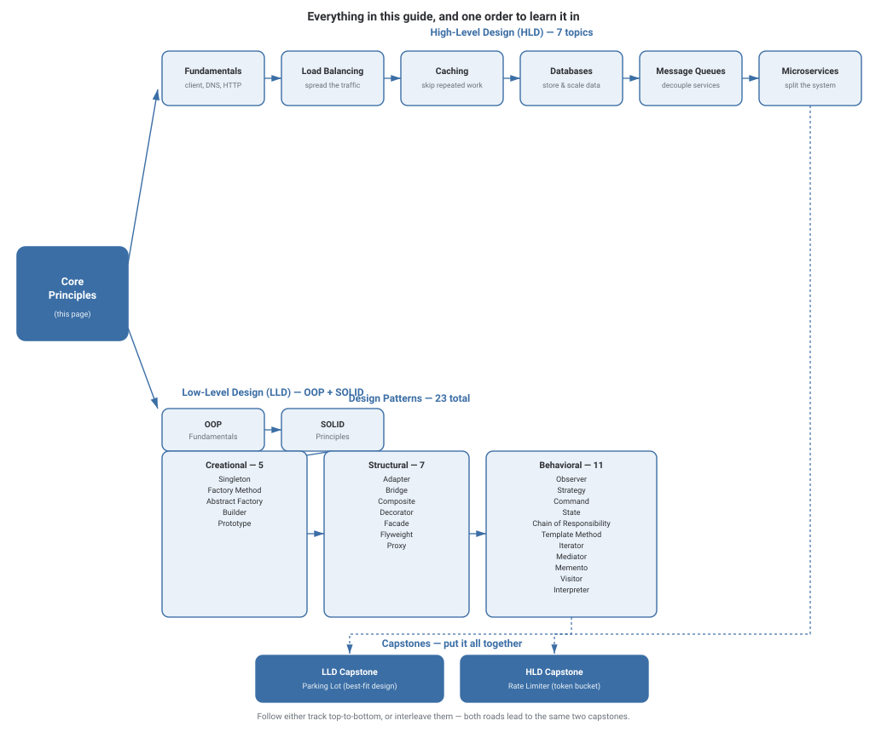
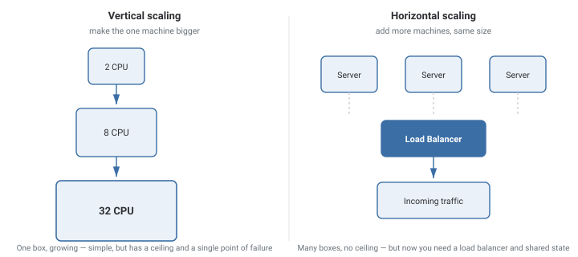
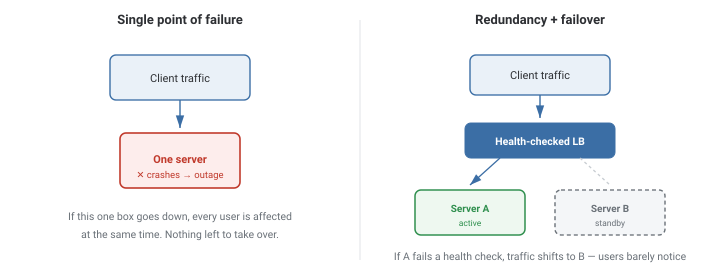
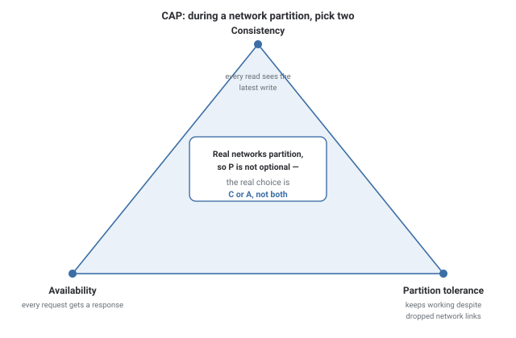

Core Principles
Scalability, reliability, and consistency — the three ideas that show up, in some form, in every HLD topic and every LLD capstone in this guide. This page also lays out the full map of what's here and one sensible order to learn it in.
In Plain English
Three questions, asked about any system you build: can it handle more people (scalability)? does it keep working when something breaks (reliability)? and when data changes, do all the copies agree, and how quickly (consistency)? Everything else in HLD is really answering one of these three questions in more detail.
Think of a single food stall that becomes a restaurant chain. Scaling is opening more locations. Reliability is having a backup chef so one sick day doesn't close a branch. Consistency is making sure the menu price you saw online matches what every branch actually charges today.
The honest version of each question has a trade-off attached: scaling costs coordination, reliability costs redundancy (money), and strong consistency costs availability during a network partition. Naming the trade-off, not just the concept, is what separates a fresher answer from a senior one.
Theory & Diagrams
How this guide fits together
Before the theory, the map. This diagram shows every topic in this guide and one reasonable path through it — start at Core Principles, then follow the HLD track and the LLD track (in either order, or interleaved), and both converge on a capstone that ties the whole thing together.

Scalability: vertical vs. horizontal
Vertical scaling means making one machine bigger — more CPU, more RAM. It's simple (no code changes) but has a hard ceiling (there's a biggest machine money can buy) and doesn't fix the single-point-of-failure problem. Horizontal scaling means adding more machines of the same size behind a load balancer. It has effectively no ceiling, but now the system has to handle state that's shared or replicated across machines instead of living in one process's memory.

The system is early-stage, the codebase assumes a single process (e.g., an in-memory cache or a monolith with local state), or the team's priority is shipping fast, not maximum scale.
Load exceeds what any single machine can serve, or the business needs zero-downtime deploys and failover — a single box can't do either no matter how large it gets.
Reliability: redundancy and failover
A system is reliable if it keeps working when a part of it fails — not if it never fails, which is unrealistic at scale. The standard fix is redundancy: run more than one of anything that can fail, and put something in front of it (a load balancer, a leader-election process) that detects a failure and routes around it automatically.

Reliability is usually talked about in terms of availability — the fraction of time a system is usable, often written as a string of nines (99.9%, 99.99%, and so on). Each additional nine is an order of magnitude less allowed downtime per year, and gets progressively more expensive to achieve.
Combine redundancy with automated health checks — redundant servers only help if something is actually watching them and re-routing traffic within seconds, not minutes.
Adding a second server but keeping a single shared database with no replica — that database is still one unhandled failure away from the same outage.
Consistency models and the CAP theorem
Strong consistency means every read sees the most recent write, everywhere, immediately — simple to reason about, but it requires coordination between replicas on every write, which costs latency and can block reads during a network issue. Eventual consistency means replicas are allowed to briefly disagree after a write, but will converge given enough time with no new writes — faster and more available, at the cost of occasionally reading stale data.
The CAP theorem formalizes the trade-off: during a network partition (some nodes can't reach others — and on a real network, this will happen), a system can guarantee Consistency or Availability, but not both. Partition tolerance isn't really a choice you get to opt out of, so CAP in practice is a choice between C and A when things go wrong.

Trade-offs
- Correctness matters more than latency — bank balances, inventory counts, seat reservations.
- Stale reads would cause a real, visible problem (double-booking a seat, overselling the last item in stock).
- A slightly stale read is harmless — a social media like count, a view counter, a recommendation feed.
- The system needs to stay available even when some replicas are unreachable (global, multi-region systems).
What interviewers are listening for: that you don't treat "scale it up," "make it reliable," and "keep it consistent" as free — that each one is a trade against something else (cost, complexity, latency, or availability), and that you can name which trade-off applies to the specific system in the question.
If you're a fresher: being able to define scalability, reliability, and consistency in one sentence each, with a real-world example, clears the bar for most entry-level system design conversations.
If you're ~3 years in: you should be able to say which model (strong or eventual) a system you've actually worked on uses, why, and what would break if it used the other one.
Real-World Examples
- Bank account balances — strongly consistent by necessity; an eventually-consistent balance could let someone overdraw an account before the system notices.
- Social media like/view counts — eventually consistent; a like count that's a few seconds stale costs nothing, and the availability trade-off is worth it at that scale.
- DNS — a real-world eventually consistent system: a record change propagates over minutes to hours as caches expire, and that's an accepted, designed-for trade-off.
- Cloud auto-scaling groups — horizontal scaling in practice: identical server instances added or removed behind a load balancer based on current traffic.
- Multi-AZ database deployments — reliability in practice: a standby replica in a different data center takes over automatically if the primary's entire data center goes down.
Interview Questions
Click a question to reveal the answer.
What's the difference between vertical and horizontal scaling, and when would you choose one over the other?
Vertical scaling adds resources (CPU, RAM) to one machine — simple, no architecture changes, but bounded by the largest machine available and still a single point of failure. Horizontal scaling adds more machines behind a load balancer — effectively unbounded and fault-tolerant, but requires the application to handle shared or replicated state instead of relying on one process's memory. Early-stage systems often start vertical for simplicity and move horizontal once load or reliability requirements demand it.
Explain the CAP theorem in your own words.
In a distributed system, when a network partition occurs (some nodes can't communicate with others), you must choose between consistency (every node returns the same, most up-to-date data) and availability (every request gets a response, even if it might be stale). Partition tolerance isn't optional on a real network, so CAP is really about what a system does during a partition: refuse some requests to stay consistent, or answer everything and risk returning stale data.
What does "99.99% availability" actually mean, and why is each additional nine harder to get?
It means the system is expected to be down no more than about 52.6 minutes per year (0.01% of ~525,600 minutes). Each additional nine (99.9% → 99.99% → 99.999%) reduces allowed downtime by roughly 10x, which usually requires disproportionately more redundancy, automation, and operational maturity — the cost doesn't scale linearly with the number of nines.
How does redundancy improve reliability, and what's the catch?
Running multiple independent instances of a component means one instance failing doesn't take down the whole system, especially if a load balancer or health check automatically routes around the failed instance. The catch: redundancy only helps against independent failures — if all instances share a single dependency (one database, one power source, one region), that shared dependency is still a single point of failure, and redundancy adds cost and coordination complexity (e.g., keeping replicas in sync).
Give an example of a system that intentionally chooses eventual consistency, and explain why that's the right call.
DNS is a good example: when a DNS record changes, it can take minutes to hours to propagate everywhere because of caching (TTLs). This is intentional — DNS needs to be extremely available and fast to look up, and the cost of that is that changes aren't seen instantly everywhere. For DNS's use case, a briefly stale answer is far less costly than making every lookup wait for global agreement.
Code & Output
This demo puts a number on "redundancy improves reliability." It models a simple system made of three components in series (a web tier, a database tier, and a cache tier, each with an independent uptime probability), computes the overall availability when all three must be up, then adds a second, independent database replica in parallel and recomputes. Pure arithmetic on fixed probabilities — deterministic, identical output in every language.